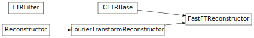

Simple Fourier Transform Reconstructor¶
The simple Fourier Transform Reconstructor uses the Fourier transform to provide an estimate of the phase of an adaptive optics system from the measured slope values.
Using this module only requires you to provide an aperture to the reconstructor class, and then call the reconstructor class:
>>> import numpy as np
>>> from FTR import FourierTransformReconstructor
>>> ap = np.ones((10,10))
>>> reconstructor = FourierTransformReconstructor(ap, filter='mod_hud')
>>> sx = np.random.randn(*ap.shape)
>>> sy = np.random.randn(*ap.shape)
>>> est = reconstructor(sx, sy)
The Fourier Transform reconstructor assumes that the estimated phase is occuring on a square, fully-periodic grid. In order to correct for this assumption, it is better to use a technique called “Slope Management”. Reconstructors that incorporate slope management are provided in FTR.slopemanage.
There are two similar reconstructor classes which users might want to take advantage of in this module, the FourierTransformReconstructor and FastFTReconstructor. The first class provides a pure-python implementation of the Fourier Transform reconstructor, and is generally easier to debug, in that it ensures that data passed wont cause problems. The second class, FastFTReconstructor, uses C implementation of FTR in libFTR under the hood, and so achieves fast speeds leveraging the FFTW library and the speed of pure c-code. However, it does less work to ensure variable saftey, and so is not a good choice for debugging.
Reference / API¶
FTR.ftr Module¶
The fourier transform reconstructor converts slopes (x and y slope grids) to phase values. The reconstruction works using the fourier transform of the x and y slopes, and applying a filter, which accounts for the way in which those slopes map to phase.
The concept for the reconstructor, and the filters documented here, are taken from Lisa Poyneer’s 2007 dissertaiton.
Functions¶
mod_hud_filter(shape) |
The modified hudgins filter is a geomoetry similar to a Fried geometry, but where the slope measurements, rather than being the difference between two adjacent points, the slope is taken to be the real slope at the point in the center of four phase measurement points. |
fried_filter(shape) |
The fried filter is for a system geometry where the slope measruement points are taken to be the difference between two adjacent points. |
ideal_filter(shape) |
An Ideal filter represents a phase where the slope measurements are taken to be a continuous sampling of the phase between phase measurement points. |
inplace_filter(shape) |
This filter modifies the ‘fried’ filter so that it reconstructs to the in-place positions of the slopes. |
hud_filter(shape) |
Hudgins shearing interferometer. |
Classes¶
FTRFilter |
|
FourierTransformReconstructor(ap[, filter, ...]) |
A reconstructor which uses the fourier transform to turn slopes into an estiate of the wavefront phase. |
FastFTReconstructor(ap[, filter, manage_tt, ...]) |
A fourier transform reconstructor which implements the reconstruct method using C implementation of FTR in libFTR. |
Class Inheritance Diagram¶
